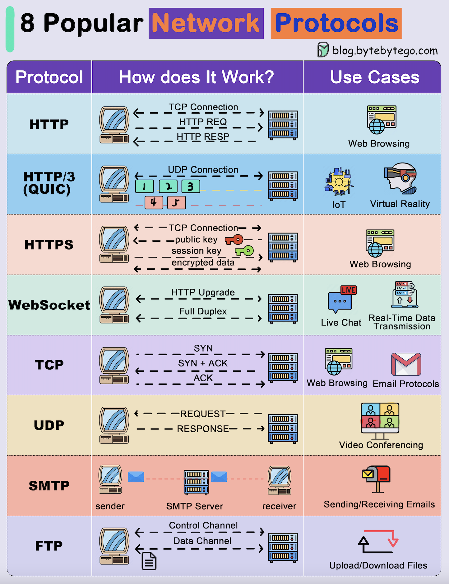

Network protocols are standard methods of transferring data between two computers in a network.

HTTP is a protocol for fetching resources such as HTML documents. It is the foundation of any data exchange on the Web and it is a client-server protocol.
HTTP/3 is the next major revision of the HTTP. It runs on QUIC, a new transport protocol designed for mobile-heavy internet usage. It relies on UDP instead of TCP, which enables faster web page responsiveness. VR applications demand more bandwidth to render intricate details of a virtual scene and will likely benefit from migrating to HTTP/3 powered by QUIC.
HTTPS extends HTTP and uses encryption for secure communications.
WebSocket is a protocol that provides full-duplex communications over TCP. Clients establish WebSockets to receive real-time updates from the back-end services. Unlike REST, which always “pulls” data, WebSocket enables data to be “pushed”. Applications, like online gaming, stock trading, and messaging apps leverage WebSocket for real-time communication.
TCP is designed to send packets across the internet and ensure the successful delivery of data and messages over networks. Many application-layer protocols build on top of TCP.
UDP sends packets directly to a target computer, without establishing a connection first. UDP is commonly used in time-sensitive communications where occasionally dropping packets is better than waiting. Voice and video traffic are often sent using this protocol.
SMTP is a standard protocol to transfer electronic mail from one user to another.
FTP is used to transfer computer files between client and server. It has separate connections for the control channel and data channel.